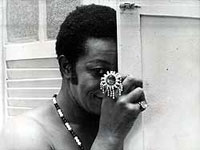
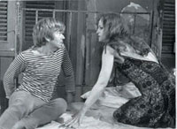
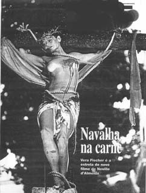

Textos adaptados & argumentos
Os filmes

1974
A Rainha Diaba
- Argumento
- Plínio Marcos
- Direção
- Antônio Carlos Fontoura
- Elenco
- Milton Gonçalves, Odete Lara, Stepan Nercessian, Nélson Xavier, Wilson Grey
- Fotografia
- José Medeiros

1969
A Navalha na Carne · 1ª adaptação
- Direção
- Braz Chediak
- Elenco
- Glauce Rocha, Jece Valadão, Emiliano Queiroz, Carlos Kroeber
- Duração
- 112 min · P&B
- Distrib.
- Sagres

1997
Navalha na Carne · 2ª adaptação
- Direção
- Neville D’Almeida
- Elenco
- Vera Fischer, Jorge Perugorría, Carlos Loffler, Isabel Fillardis
- Duração
- 105 min · cor
- Distrib.
- Europa Filmes

1970
Dois Perdidos numa Noite Suja · 1ª adaptação
- Direção
- Braz Chediak
- Elenco
- Emiliano Queiroz, Nelson Xavier
- Produtora
- Magnus Filmes (Jece Valadão)
2003
Dois Perdidos numa Noite Suja · 2ª adaptação
- Direção
- José Joffily
- Elenco
- Débora Falabella, Roberto Bomtempo
- Roteiro
- Paulo Halm
- Distrib.
- Riofilme · 100 min

1990
Barrela, Escola de Crimes
- Direção
- Marco Antonio Cury
- Elenco
- Paulo César Pereio, Marcos Palmeira, Cláudio Mamberti, Chico Diaz
- Duração
- 75 min · cor

2006
Querô
- Direção
- Carlos Cortez
- Elenco
- Maxwell Nascimento, Ailton Graça, Milhem Cortaz
- Distrib.
- Downtown Filmes · 35 mm, cor
1977
Barra-Pesada · de Querô, Uma Reportagem Maldita
- Direção
- Reginaldo Faria
- Música
- Edu Lobo
- Elenco
- Stepan Nercessian, Kátia D’Angelo, Ítala Nandi, Wilson Grey
1970
Beto Rockfeller, o filme · Plínio ator
- Direção
- Olivier Perroy
- Personagem
- Vitório
- Elenco
- Luiz Gustavo, Plínio Marcos, Lélia Abramo, Walmor Chagas, Raul Cortez
1971
Nenê Bandalho · argumento original
- Argumento
- Plínio Marcos
- Direção
- Emílio Fontana
- Nota
- Nunca lançado, proibido pela Censura Federal após finalizado
Também em curta-metragem: O Telepata (adaptação da crônica homônima, dir. Gustavo Brandão) e O Abat-jour Lilás (livre adaptação da peça, filme de formatura, 2000).